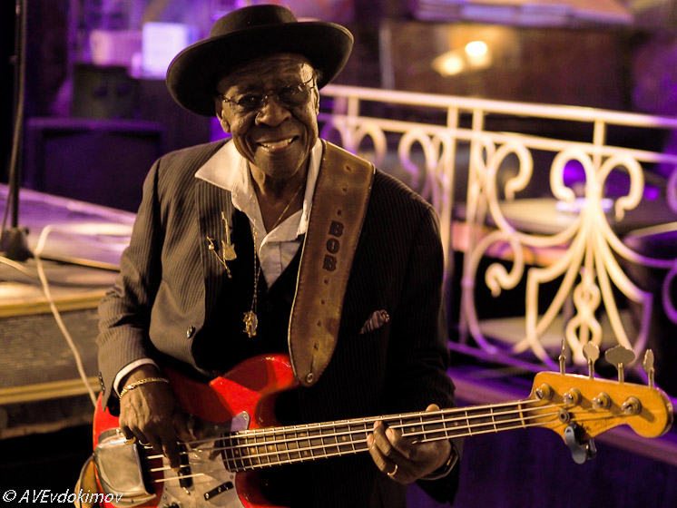
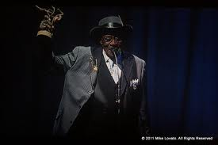
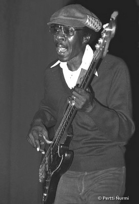
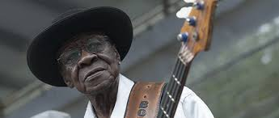

Bob STROGERКонспект и аудиозапись программы "Весь Этот Блюз" от 26 января 2015 г.
Боб Строджер свою краткую автобиографию излагает в нескольких песнях. "Родился я в Миссури, дом обрел в Чикаго, любимую встретил в Швейцарии - и привез ее к себе домой," - эти строчки из песни Born In Missouri, которая открывает его альбом 2014 г. В 2008 году Строджер выступал в Москве как ветеран чикагского блюза, аккомпанировавший ярчайшим блюзовым звездам второй половины ХХ века; как свидетель и участник великих блюзовых переворотов и революций. Его и ждали в качестве реликта ушедшей эпохи и исторической личности. А всем, кто побывал на его концертах, он оставил он по себе отличные воспоминания - как музыкант очень теплый, открытый и душевный, контактный в общении со сцены с публикой. Строджер не копирует великих, он сам своеобразный вокалист с мягкой манерой подачи, безупречный басист и абсолютно органичный в блюзе человек.  Вернулся вновь в Россию он в 2015 году уже с новыми регалиями: дважды отмеченный премией Blues Foundation как лучший блюзовый бас-гитарист, обладатель премии Grammy за соучастие в записи альбома Пайнтопа Перкинса и Уилли Биг Айз Смита 2010 года. Гастроли проходили в Москве и подмосковном Одинцово, а так же по всей Сибири - и везде находил горячий прием. Аншлаги сопутствовали по всюду.Как солист он объездил весь мир, выступал и в клубах энтузиастов, и на больших престижных фестивалях. Его сольная дискография к 2015 году насчитывала всего три альбома. Первый был записан во время его выступления на знаменитом блюз-фестивале в Люцерне, Швейцария. Джеймс Уиллер и Билл Флинн играли на гитарах, Рон Сорин терзал губную гармонику. Клавишные - Кен Сейдак. Боб Строджер родился в Миссури, в 16 лет с родителями оказался в Чикаго. Жили в доме во дворе за блюз-клубом "Сильвио-з". Через двор в его комнату лучше всего доносились звуки бас-гитары и бас-барабана. Говорят, именно поэтому он и выбрал своим инструментом бас. Ну, в хорошей шутке всегда есть доля правды. А еще его сводный брат играл на ударных, и Боб частенько - по молодости лет, служил всей группе бесплатным и, что особенно важно, непьющим шофером. Вот так и втянулся в чикагские блюзовые круги, было это в 1955-м, чикагская электрическая блюз-революция была в самом разгаре, Элмор Джеймс был восходящей звездой, инноватором электрического слайда.  Сам Строджер вспоминал о своих первых шагах так: "Изначально я играл на гитаре. Но Элмор Джеймс превратил ее в бас. Мы в группе не могли позволить себе купить бас. И Элмор Джеймс отдал мне одну свою гитару, чтобы мы с ней как-то что-то придумали. Басист Джимми Ли Роджерс показал, как настроить ее на октаву ниже, чтобы имитировать звучание баса. Я на этой чертовой штуковине играл потом много лет как на басу". В первой его группе он играл вместе с братом. Солистом был Уилли Кент. А первую запись он сделал в группе Эдди Кинга.В группе Эдди Кинга Боб Строджер играл целых 15 лет - и ему все нравилось. В группе была хорошая атмосфера и вообще полное взаимопонимание. Когда по семейным обстоятельствам Кинг переехал в другой город, Строджер даже на два года забросил музыку вообще: не хотел играть в другой группе. Но, конечно, блюз он не мог забыть, а потому все-таки вернулся на сцену, аккомпанировал очень многим из великих, в том числи в 70-80-х играл с Отисом Рашем, потом 15 лет в ансамбле Саннилэнда Слима. Гастролировал и записывался с Луизианой Редом, а на пару с легендарным барабанщиком Одди Пейном несколько лет работал ритм-секцией программы Америкэн фолк-блюз-фестивал, вместе с певицей Дейтрой Фарр был участником ансамбля "Миссиссиппи Хиат". Боб Строгер выступал и записывался с такими блюзменами, как Jimmy Rogers, Sunnyland Slim, Otis Rush, Pinetop Perkins, Carey Bell, Hubert Sumlin, Eddie Taylor, Eddie Clearwater, Louisiana Red, Buster Benton, Homesick James, Snooky Pryor. Помимо многочисленных концертных и студийных проектов, он (вместе с ударником Одди Пэйном) работал в ритм-секции на концертах серии American Folk Blues Festivals. Альбом "Keepin it Together" 2015 года - отличный альбом, добродушный, ненавязчиво драйвовый, вполне традиционный, но живой, легкий и обаятельный. Записал его Строджер на пару с барабанщиком Кенни Смитом, по прозвищу "Биди Айз". Его отец барабанщик Уилли Смит, по прозвищу Биг Айз, был старинным другом Строджера. Строджер и ранее гастролировал со Смитом-младшим. Теперь вот есть альбом, где они - равноправные партнеры: вокалисты и авторы песен. 
|